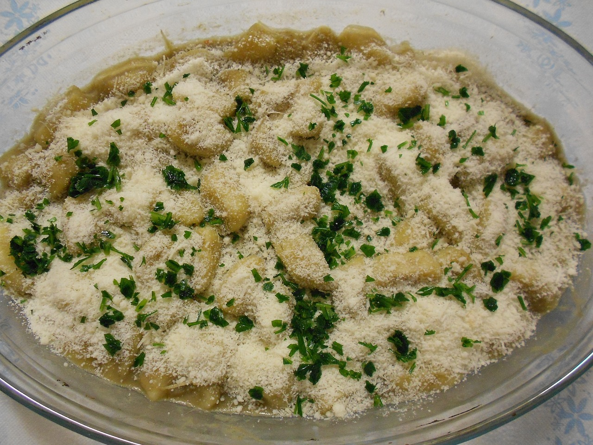
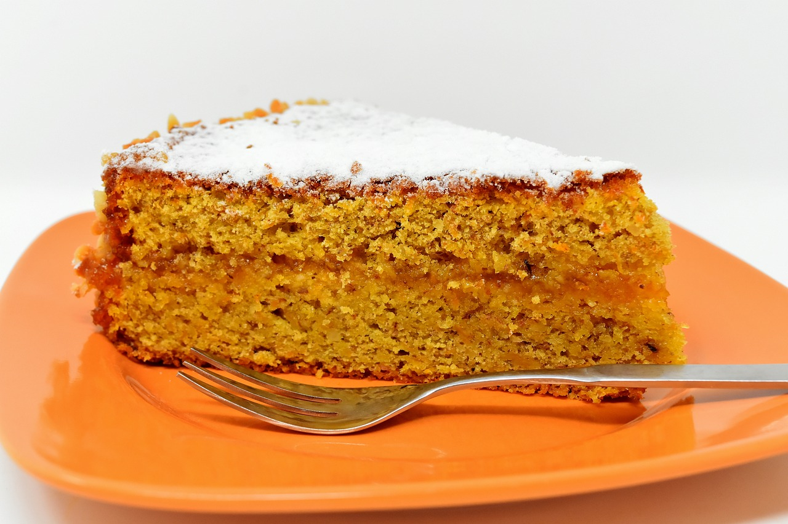
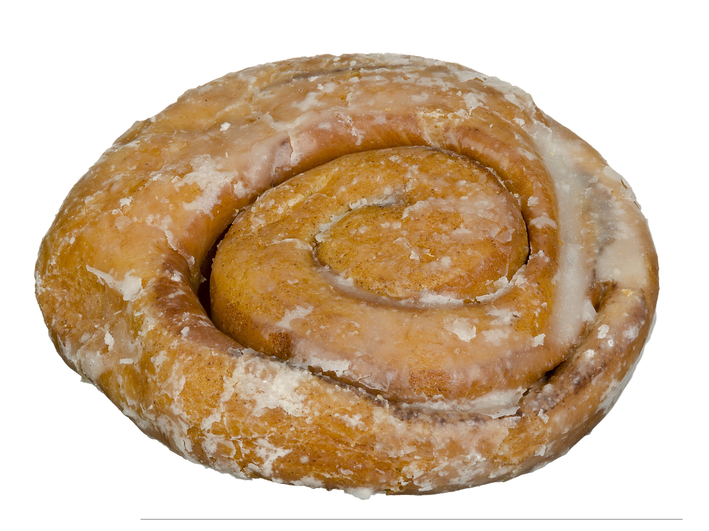
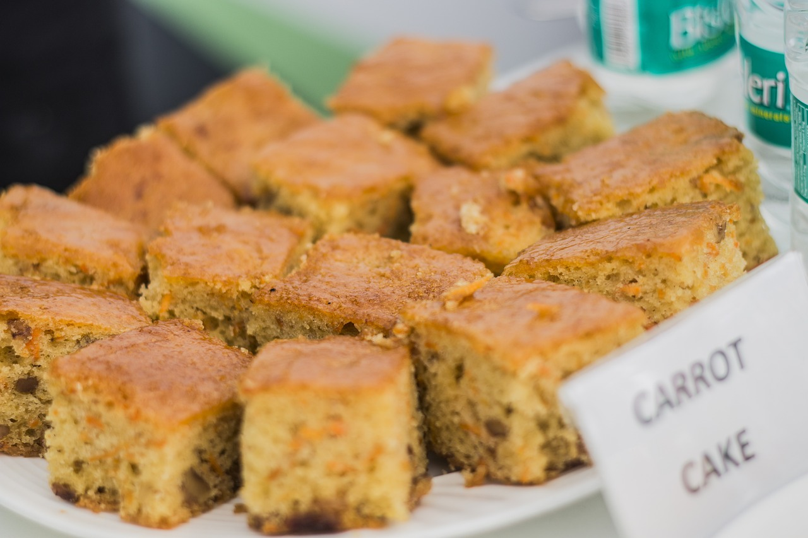

Conheça as melhores receitas para combinar com as nossas bebidas

Bolo de cenoura com cobertura de chocolate
Ver receita:
- 3 cenouras médias
- 3 ovos
- 1 xícara de chá de óleo
- 2 xícaras de açúcar
- 2 xícaras de farinha de trigo
- 1 tampa de fermento para peneirar com o fermento
- Chocolate amargo em pó
- 3 colheres de leite
- 1 1/2 colher de margarina
- 2 colheres de açúcar
Bolinho de chuva com brigadeiro
Ver receita:
- 2 ovos
- 1/2 xícara (chá) de açúcar
- 1 colher (café) de essência de baunilha
- 1 xícara (chá) de leite
- 3 xícaras (chá) de farinha de trigo
- 1 colher (chá) de fermento em pó
- Açúcar e canela em pó para polvilhar
- 1 lata de leite condensado
- 2 colheres (sopa) de chocolate em pó
- 1 colher (sopa) de manteiga
- 1 caixa de creme de leite (200g)

Bolinha de queijo com ervas
Ver receita:
- 2 xícaras (chá) de água
- 2 cubos de caldo de galinha
- 2 colheres (sopa) de manteiga
- 1 colher (chá) de sal
- 2 xícaras (chá) de farinha de trigo
- 2 claras para empanar
- 1 xícara (chá) de farinha de rosca para empanar
- Óleo para fritar
- 2 xícaras (chá) de queijo mussarela em cubos
- 2 colheres (sopa) de salsa picada
- 10 folhas de manjericão fresco picado
- 2 colheres (sopa) de azeite

Bolo cremoso de fubá com coco
Ver receita:
- 4 ovos
- 3 xícaras (chá) de leite
- 1 vidro de leite de coco (200 ml)
- 2 xícaras (chá) de açúcar
- 7 colheres (sopa) de farinha de trigo
- 4 colheres (sopa) de manteiga
- 150g de queijo parmesão ralado
- 2 e 1/2 xícara (chá) de fubá
- 1 colher (sopa) de fermento em pó
- Margarina e farinha de trigo para untar e enfarinhar

Rosquinha doce
Ver receita:
- 2 tabletes de fermento biológico fresco (30g)
- 4 colheres (sopa) de açúcar
- 1 e 1/3 de xícara (chá) de leite morno
- 1/2 xícara (chá) de óleo
- 2 ovos
- 1 colher (chá) de sal
- 3 xícaras (chá) de farinha de trigo (aproximadamente)
- Óleo e farinha de trigo para untar
- 1 gema para pincelar
- Coco ralado para polvilhar

Bolo cremoso de fubá
Ver receita:
- 3 xícaras (chá) de leite
- 1 vidro de leite de coco (200ml)
- 4 ovos
- 1/2 xícara (chá) de manteiga
- 2 xícaras (chá) de açúcar
- 1 e 1/2 xícara (chá) de fubá
- 5 colheres (sopa) de queijo parmesão ralado
- 1/2 xícara (chá) de farinha de trigo
- 1 colher (sopa) de fermento em pó
- Margarina e farinha de trigo para untar
- Açúcar e canela em pó para polvilhar